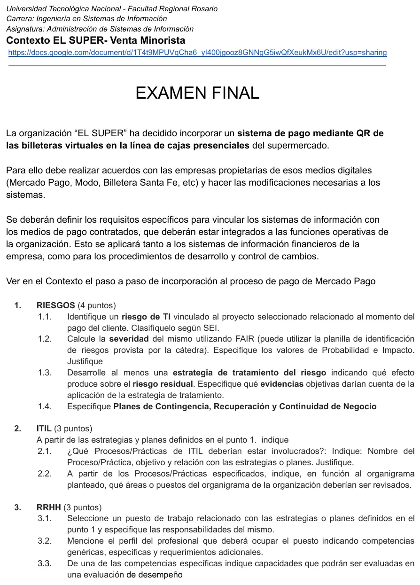

Final, 22/04/2025
Final, 22/04/2025
Enunciado


Propuesta de respuesta
Respuesta no verificada. La propuso Luta Studios con inteligencia artificial y ningún docente la revisó. Puede tener errores.
1. Riesgos
1.1. Riesgo de TI al momento del pago y clasificación SEI
El servicio de cobro con QR de las cajas no recibe a tiempo la confirmación del pago de la billetera virtual, por una demora o caída en la integración con el proveedor, y la caja registra la venta como impaga mientras el dinero ya se debitó, o se cobra dos veces al reintentar, lo que afecta el proceso crítico de cobro en la línea de cajas.
| Clase | Subclase | Elemento |
|---|---|---|
| 2. Fallas de sistemas y tecnología | 2.3 Sistemas | Integración |
| 4. Eventos externos | 4.3 Cuestiones del negocio | Fallas del suministro (el servicio del proveedor de la billetera) |
Los activos son el software de cobro de las cajas y su integración con cada billetera (software), las operaciones de cobro (información), las cajas y lectores (hardware) y el servicio del proveedor (servicios). Las dimensiones afectadas son la integridad, porque hay cobros duplicados o sin registrar, y la disponibilidad del cobro con QR.
1.2. Severidad con FAIR
| Factores | Valor | |
|---|---|---|
| Probabilidad | Frecuencia de amenazas con contacto periódico, en los picos de los fines de semana y del principio de mes, cuando la red y los proveedores están más cargados. Capacidad de resistencia media, si la integración no consulta el estado del pago antes de reintentar | 3, moderado |
| Impacto | Productividad, colas y cajas frenadas. Costo, devoluciones y horas de conciliación. Sensibilidad, reputación ante el cliente y posibles reclamos por cobros dobles. Volumen, todas las cajas de todas las sucursales que usan ese proveedor. Momento, en hora pico el efecto es mayor | 4, mayor |
1.3. Estrategia de tratamiento, residual y evidencias
| Estrategia | Qué se hace | Efecto |
|---|---|---|
| Mitigar | Cada cobro lleva un identificador único y, ante una demora, la caja consulta el estado del pago antes de reintentar, así no se cobra dos veces. Conciliación automática diaria contra el reporte del proveedor. Pruebas de la integración en un entorno separado (8.31) y cada cambio por gestión del cambio (8.32). Monitoreo de los tiempos de respuesta (8.16) | Baja la probabilidad, y la conciliación baja el impacto |
| Transferir | Contrato con cada proveedor (UC) con SLA de disponibilidad, plazos de devolución y penalidades | Baja el impacto económico |
Riesgo residual, con la misma especificación, probabilidad 2 e impacto 3.
| Evidencia objetiva | Qué demuestra |
|---|---|
| Logs de cada cobro con su identificador y las consultas de estado | Que no hubo reintentos sin consultar |
| Reportes diarios de conciliación con las diferencias resueltas | Que la conciliación se hace |
| Tickets de cambios aprobados con su prueba en el entorno separado | Que la integración no cambió sin control |
| Reportes de cumplimiento del SLA de cada proveedor | Que el contrato se controla |
1.4. Planes
| Plan | Actividades |
|---|---|
| Contingencia | Si el QR no confirma en el tiempo fijado, la caja no reintenta. Consulta el estado en el panel del proveedor y, si no responde, ofrece otro medio (tarjeta, efectivo u otra billetera). Se registra el incidente y se pone un cartel en la línea de cajas |
| Continuidad | Las cajas siguen cobrando con tarjeta y efectivo. Las operaciones dudosas se anotan con su identificador para conciliarlas después |
| Recuperación | Restablecer la integración con el proveedor, conciliar todas las operaciones dudosas, devolver los cobros dobles y cerrar con un PIR |
2. ITIL
2.1. Prácticas involucradas
| Práctica | Objetivo | Relación con las estrategias o planes |
|---|---|---|
| Gestión de Eventos | Detectar y filtrar los cambios de estado de la integración | Una demora es un evento de advertencia, que activa las estrategias. Una caída es un evento de excepción, que activa la contingencia |
| Gestión de Incidentes | Volver a cobrar normalmente lo antes posible | La comunicación del cajero es el disparador. La solución temporal es la contingencia y la permanente, la recuperación |
| Gestión de Problemas | Encontrar la causa de los cobros dobles o sin confirmar | Termina en el RFC que corrige la integración |
| Control de Cambios | Que cada cambio en la integración o en la versión del proveedor esté aprobado y probado | Es la estrategia de mitigación, y aprueba la corrección de la recuperación |
| Versiones | Instalar en todas las cajas la versión corregida, con vuelta atrás | Hace el pase de la recuperación |
| Configuración y Activos | Saber qué versión de la integración tiene cada caja | Muestra qué cajas están afectadas |
2.2. Áreas o puestos a revisar. Mesa de ayuda (primera línea), Desarrollo o Integraciones (segunda línea de la integración), Infraestructura y Redes (conectividad de las sucursales), Seguridad de la información, Tesorería y Administración (conciliación y devoluciones), los supervisores de caja de cada sucursal y Compras o Legales (contratos con los proveedores de billeteras).
3. RRHH
3.1. Puesto y responsabilidades. Desarrollador de integraciones de medios de pago (cluster Desarrollo de CESSI).
- Mantener la integración de las cajas con cada billetera y aplicar las estrategias de mitigación (identificador único, consulta de estado).
- Atender como segunda línea los incidentes de cobro con QR.
- Preparar los RFC de los cambios y probarlos en el entorno separado.
- Revisar con Tesorería las diferencias de la conciliación.
3.2. Perfil
| Aspecto | Detalle |
|---|---|
| Competencias genéricas | Trabajo en equipo, comunicación con áreas no técnicas, proactividad, trabajo bajo presión |
| Competencias específicas | Integrar sistemas con servicios externos de pago. Diagnosticar fallas de integración con logs. Diseñar pruebas de integración. Aplicar control de cambios y versiones |
| Requerimientos adicionales | Estudios de Ingeniería en Sistemas o afín. Experiencia de 2 años en medios de pago o comercio minorista. Disponibilidad para guardias en horarios de alta venta |
3.3. Capacidades para la evaluación de desempeño. Competencia específica «Diagnosticar fallas de integración con logs».
| Capacidad | Descripción | Escala |
|---|---|---|
| Análisis | Encuentra la causa del cobro fallido cruzando los logs de la caja y del proveedor | 1 a 5 |
| Resolución en tiempo | Resuelve los incidentes escalados dentro del SLA | 1 a 5 |
| Documentación | Registra la causa y la solución en la KB | 1 a 5 |
| Prevención | Propone cambios para que la falla no se repita | 1 a 5 |
Respuesta no verificada. Puede tener errores.
Se armó con 1° parcial para el riesgo (especificación, SEI, FAIR, estrategias, controles de ISO 27002, evidencias y planes), 2° parcial para las prácticas de ITIL y el perfil, y la tabla de conexiones entre riesgos e ITIL de la página del Final.
Quedó en duda: El contexto de El Super, con su paso a paso de Mercado Pago y su organigrama, no está en la materia. Los nombres de áreas y puestos son supuestos. Se sumó una clasificación secundaria en Eventos externos porque el servicio del proveedor es externo. La principal es de sistemas, y la consigna no limita las clases.
¿Cómo te fue?
Marcá cada tema del examen.
- RiesgosRiesgos, en Final
- ITILITIL, en Final
- PerfilesCompetencias y perfil, en 2° parcial